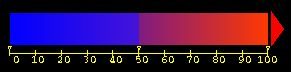

Installing and Using WatCH
A tool for identifying conserved water sites and analyzing their degree of
conservation using heirarchical cluster analysis of superimposed related Protein Data Bank
structures.

- Introduction
- Getting and Installing WatCH
- Running WatCH
- Output Files Produced by
WatCH
- Demonstration Files
- Algorithmic Details of
WatCH
- Contact Information
Introduction
WatCH is a tool for the calculation of conserved water sites
in a series of related structures in Protein Data Bank files.
WatCH was developed by members of the Protein Structural
Analysis and Design Laboratory at Michigan State University. When several
structures are superimposed, complete linkage cluster analysis
provides an objective technique for resolving the continuum of
overlaps between water sites into the set of maximally dense
microclusters of overlapping water molecules, and also avoids reliance
on any one structure as a reference.
For literature references related to WatCH, please see the
section on Algorithmic Details.
 Back
to Table of Contents
Back
to Table of Contents
Getting and Installing WatCH
Installation and Use of WatCH implies agreement with the attached
License Agreement.
(Also included in the distribution package.)
System Requirements: WatCH has been compiled with the GNU
and Sun C compiler packages on Sun Solaris for SPARC and x86 and IRIX
platforms, but should work with most C compilers. Accessory
installation, data extraction, and results analysis scripts also
require perl, but the clustering program itself will run without
it.
The latest version of WatCH, as well as the most
recent version of this documentation, can be found at the home page
for the Protein
Structural Analysis and Design Laboratory, Department of Biochemistry and
Molecular Biology, Michigan State University. To install
WatCH, perform the following steps:
- Download WatCH.tar.Z (Unix compress format) OR
WatCH.tar.gz (GNU gzip format)
- Place this file in the directory into which you wish to install the
software, and enter the following command:
-
Check that your perl installation is accessible via
/bin/perl. This can be done by typing /bin/perl
-v, which will result in version and copyright information
output. If this does not work, edit the install.pl
script to point to the correct perl executable. This can be
identified by typing which perl at the command line
prompt.
- Run ./install.pl
(This assumes you have perl. If not,
change to the src directory, type make, and
then move cluster (the binary program) to your desired
installation or bin directory.)
- WatCH will now be compiled using the file locations
specified.
- To run WatCH, run the WatCH program.
Back
to Table of Contents
Running WatCH
Overview of usage
Before WatCH is run, the input PDB structures must be prepared as described
below in Preparing Coordinate Files for Use with WatCH
WatCH is run via the command-line interface with the
following usage:
Usage: cluster <point file> [<clustering threshold>] [<output file>]
(if threshold is not given, 3.60 will be used)
(for the output file option to be used, the threshold must be set explicitly)
(point file must in form of <integer label> <X> <Y> <Z>)
It requires an input file of the following form:
# WaterID X Y Z
10934 9.123 -10.345 11.653
where:
- WaterID: an unique identifier for each water molecule
consisting of an integer structure ID number concatenated with
the water molecule's residue number. This file should contain
all of the water molecules to be analyzed.
- X, Y, and Z: Coordinates of the water
molecule.
Generation of this file is described below in Input File Preparation.
The resultant output file is in the following form:
# Column Number
#1 2 3 4 5 6
0 7 4.889 -24.226 27.970 -- 100305 100324 100346 100434 100307 100339 100312
1 6 -0.668 -7.894 25.561 -- 100306 100309 100388 100459 100499 100506
2 4 18.532 -13.080 32.383 -- 100308 100315 100311 100314
where the columns are:
- Cluster Number,
- Cluster Conservation (i.e. number of water molecules in that cluster),
- X coordinate of the cluster,
- Y coordinate of the cluster,
- Z coordinate of the cluster, and
- Cluster contents (i.e. which water molecules are in that cluster).
Back
to Table of Contents
Preparing Coordinate Files for Use with
WatCH
Running WatCH requires the extraction of coordinates
of the water molecules in each of the crystallographic structures
of interest to a file as described above.
- Superimpose each of the structures in question to a common reference
frame. This can be done using InsightII's Transform/Superimpose
command or via another superposition method.
- Extract the WaterID and coordinate information for water
molecules in each of the structures of interest using the
prep_WatCH script.
This must be run for each superimposed
structure, giving each structure a unique identifier. This script is
run as follows:
- First Structure: prep_WatCH <structure ID> <pdb
file> > <output file>
- Subsequent Structures: prep_WatCH <structure ID> <pdb
file> >> <output file>
Back
to Table of Contents
Analysis of WatCH output
As described above, the output of WatCH is a file in
which contains the coordinates for each cluster, calculated as the
mean of the coordinates of each of the cluster's member water
molecules, and the cluster contents, i.e. the identifiers for the
water molecules which are a member of that cluster. There are 3
additional perl scripts that may be of use for analysis of the
results.
- check_cluster_contents.pl <check> <cluster output file>:
Usage: check_cluster_contents.pl <check> <cluster file>
checks are: -d (find clusters with waters from same structure)
-c (give count for number of cluster points from each str in each cluster)
-p <point id> (find cluster with specified cluster point)
-s <structure id> (find clusters with waters from a specific structure)
except for -d and -c together, only 1 check may be used
- cluster2pdb.pl: Convert the cluster output file to a
PDB formatted file, containing water molecules representing
each cluster centroid. The B-value column is used to hold the
degree of conservation for each cluster.
- cluster2percent.pl: Convert the cluster output file
from one with absolute degrees of conservation, e.g. the
cluster is conserved in 4 structures (of the e.g. 8), to one
with relative conservation, e.g. the cluster is conserved in
50% of the structures. This script, followed by
cluster2pdb.pl, can be used to achieve a PDB formatted
file of the cluster cetntroids with the B-value column
containing percentage conservation.
An additional file is provided, an InsightII (Accelrys, Inc)
spectrum, which can be used to facilitate coloring of the cluster
output by degree of conservation, after using
cluster2percent.pl and cluster2pdb.pl. This file is
misc/cluster_per.spect and can be read using the
InsightII Spectrum/Get command. The spectrum is
colored with dark blue as 0% conservation, purplish blue as 50%
conservation, purplish red as just over 50% conservation, and dark red
as 100% conservation.

Back
to Table of Contents
Demonstration Files
Included in the demo directory are a series of files which
can be used as a demonstration of WatCH. This demo uses
three thrombin structures, PDB codes 1hai, 1hah, and 1vr1.
- Superimpose 1hah and 1vr1 onto 1hai using the catalytic triad
residues (His H57, Asp H102, & Ser H195). This gives the
following files: 1hai.pdb (untransformed as it was
used as the base for superposition),
1hah.transformed.pdb, and
1vr1.transformed.pdb.
- Extract the water molecule data from each file:
../bin/prep_WatCH 10 1hai.pdb > 1hai.wats
../bin/prep_WatCH 20 1hah.transformed.pdb > 1hah.wats
../bin/prep_WatCH 30 1vr1.transformed.pdb > 1vr1.wats
- Cat the files together into a single input file:
cat 1hai.wats 1hah.wats 1vr1.wats > all.wats
- Run the clustering program:
../bin/cluster all.wats 3.6 all.clusters
- Transform from absolute to relative conservation:
../bin/cluster2percent.pl 3 all.clusters > all.clusters.percent
- Transform the cluster files into PDB files for visualization
with InsightII, RasMol, or another molecular
visualization program:
../bin/clusters2pdb.pl all.clusters > all.clusters.pdb
../bin/clusters2pdb.pl all.clusters.percent > all.clusters.percent.pdb
- Determine which clusters have water molecules from the same structure:
../bin/check_cluster_contents.pl -d all.clusters > all.clusters.samestr
- Count the number of water molecules from each structure in each cluster:
../bin/check_cluster_contents.pl -c all.clusters > all.clusters.strcount
- Identify the cluster which contains water molecule number 431 from 1hai (structure ID 10; water ID 100431):
../bin/check_cluster_contents.pl -p 100431 all.clusters > all.clusters.point100431
- Identify clusters which contain water molecules from 1vr1 (structure ID 30):
../bin/check_cluster_contents.pl -s 30 all.clusters > all.clusters.str30
Back to Table of Contents
Algorithmic Details of WatCH
WatCH uses complete-linkage hierarchical cluster
analysis to calculate clusters of bound water molecules. Details of
this algorithm and its application to thrombin and trypsin can be
found in the following reference:
P. C. Sanschagrin and L. A. Kuhn
Cluster Analysis of Consensus Water Sites in Thrombin
and Trypsin Shows Conservation between Serine Proteases and
Contributions to Ligand Specificity
Prot. Sci., Vol. 7, No. 10, October 1998, pp 2054-2064.
PubMed Entry
Back
to Table of Contents
Contact Information
Inquiries, bug reports, etc. should be directed to Dr. Leslie Kuhn at
the following email address:
kuhn@agua.bch.msu.edu